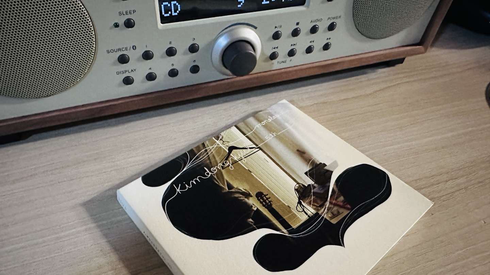
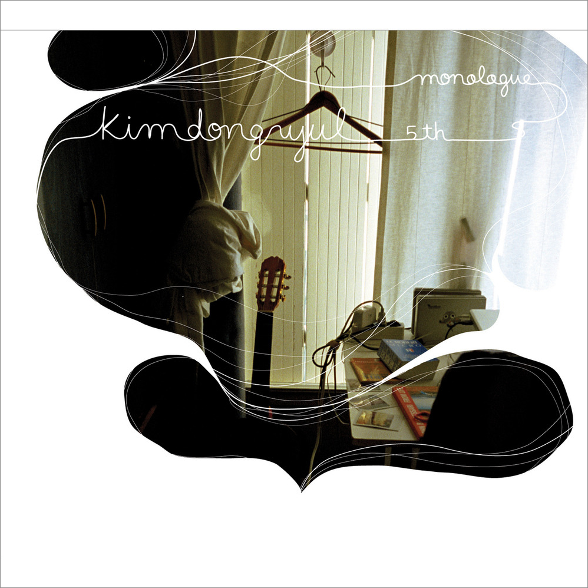

안녕하세요 라보엠입니다.
겨울맞이 짐정리를 하다가 CD 몇 장을 발견했습니다. 마침 오디오도 바꿔서 CD 를 구하고 있었는데, 좋은 일이었죠. 그중에는 윤종신의 4집 공존과 김동률의 5집 모놀로그 Monologue 도 있었습니다. 그중 오늘 소개해드릴 김동률의 다섯 번째 정규 앨범 "Monologue"는 2008년 1월 23일에 발매된 작품으로, 그의 음악 세계를 한층 더 깊이 있게 보여주는 앨범입니다. 4집 이후 4년 만에 선보인 이 앨범은 김동률의 음악적 성숙도와 대중성을 동시에 잘 보여주는 작품으로 평가받고 있습니다.

김동률 5집 Monologue 앨범 개요
"Monologue"는 발라드, 재즈, 오케스트라 등 다양한 장르를 아우르는 10곡으로 구성되어 있습니다. 김동률은 이 앨범에서 작곡가로서의 역량을 유감없이 발휘하며, 모든 곡의 작곡을 담당했습니다. 또한 프로듀서로서도 참여하여 앨범 전반의 음악적 방향성을 이끌었습니다. 이 앨범을 바탕으로 2008 콘서트 Monologue 실황 앨범도 나왔는데, 정말 버릴 곡이 하나도 없습니다. 이 앨범은 따로 소개해드리도록 하겠습니다.
김동률 5집 Monologue 수록곡 소개
- "출발": 앨범의 시작을 알리는 모던록 풍의 곡으로, 김동률의 새로운 음악적 시도를 보여줍니다. TV에서 여행과 관련된 장면에서는 수도 없이 틀어주었습니다.
- "그건 말야": 이적이 준 제목을 바탕으로 김동률이 새롭게 만든 곡입니다.
- "오래된 노래": 과거를 회상하는 감성적인 가사가 돋보이는 곡입니다.
- "Jump": 마이 앤트 메리의 정순용이 피처링으로 참여한 곡입니다.
- "아이처럼": 알렉스와의 듀엣곡으로, 대중적으로 큰 사랑을 받은 히트곡입니다. 출발과 함께 이 노래도 TV에서 엄청나게 많이 BGM 으로 사용되었습니다.
- "The Concert": 콘서트의 분위기를 음악으로 표현한 웅장한 곡입니다.
- "Nobody": 김동률의 독특한 감성이 돋보이는 곡입니다.
- "뒷모습": 박창학의 작사로 완성된 감성적인 발라드입니다. 고상지의 반도네온 인트로가 인상적입니다.
- "다시 시작해보자": 앨범의 타이틀곡으로, 새로운 시작에 대한 메시지를 담고 있습니다.
- "Melody": 앨범의 마지막을 장식하는 곡으로, 김동률의 음악적 여정을 담아냈습니다.
2008년 Monologue 콘서트 Meolody
15년 후 2023년 콘서트 마지막 앵콜 Melody 영상
김동률 5집 Monologue 앨범의 특징
김동률 5집 Monologue는 김동률의 음악적 성숙도를 잘 보여주는 앨범입니다. 이전 앨범들에 비해 상대적으로 가벼운 톤과 대중적인 멜로디를 채택하면서도, 김동률 특유의 깊이 있는 음악성을 잃지 않았습니다. 특히 구어체적 가사의 사용과 팬들이 기대하는 말랑말랑한 곡들의 수록은 이 앨범의 큰 특징이라고 할 수 있습니다.
앨범 재킷 또한 주목할 만한 점입니다. 이전 앨범들의 이국적이거나 도시적인 이미지와는 달리, 자신의 작업 공간을 배경으로 한 친근한 모습을 보여줍니다. 이는 앨범의 전반적인 콘셉트인 '독백'과도 잘 어울리는 선택이었습니다.

앨범의 성과
Monologue는 발매 직후부터 큰 인기를 얻어, 음반 판매 사이트 한터에서 실시간 차트와 주간 차트 1위를 기록했습니다. 더불어 13만 장이라는 놀라운 판매량을 기록하며 2008년 상반기 최다 판매 앨범이 되었습니다. 이 앨범의 성공은 여러 음악상 수상으로 이어졌습니다. MKMF에서 작사상을 받았고, 2008년 골든 디스크에서는 본상을 수상했습니다. 또한 2009년 제6회 한국대중음악상에서는 최우수 팝 음반으로 선정되는 영예를 안았습니다.
김동률의 Monologue는 그의 음악적 여정에서 중요한 전환점이 된 앨범입니다. 대중성과 음악성의 균형을 잘 잡아낸 이 앨범은 김동률이 한국 대중음악계에서 차지하는 위상을 다시 한번 확인시켜 주었습니다. 발매 후 10년이 넘은 지금까지도 많은 사랑을 받고 있는 이 앨범은, 시간이 지나도 변치 않는 좋은 음악의 가치를 보여주는 훌륭한 예시라고 할 수 있겠습니다.
얼마전에 나온 김동률의 신곡 산책을 들으면서 새로운 정규앨범이 나온다면 참 좋겠다고 생각했습니다. 이 가을은 김동률과 함께해보세요.
김동률 2024년 신곡 산책
김동률 산책 신곡 노래 가사
안녕하세요 티스토리 음악 분야 크리에이터 한스입니다. 산책하기 좋은 가을날에 어울리는 김동률의 신곡 산책이 발매되었습니다.소박한 피아노 선율로 시작되는 이 곡은 김동률 특유의 섬세
umm.la-bohe.me